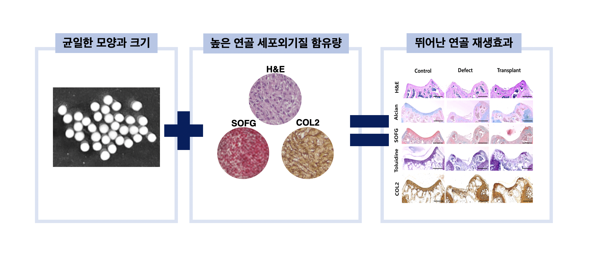
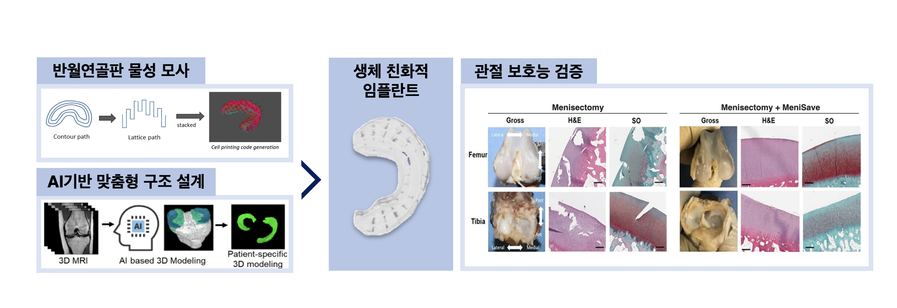
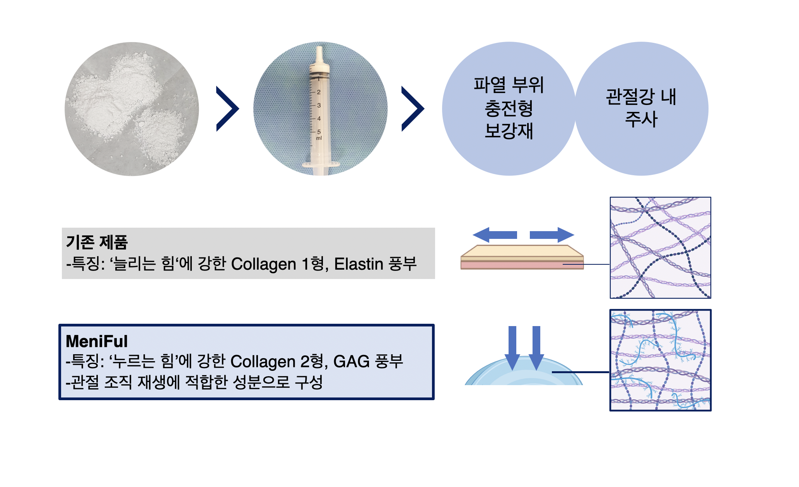

Three products, one regenerative platform.세 가지 제품, 하나의 재생 플랫폼.
Each therapy targets a distinct stage of joint damage. MeniFul ships first via the tissue-bank pathway; MeniSave follows under the patient-specific medical-device fast track; Carti-All advances in parallel on the advanced-biologic track.세 치료제는 각각 손상의 서로 다른 단계를 타겟합니다. MeniFul은 조직은행 신고 트랙으로 선행 출시, MeniSave는 환자 맞춤형 의료기기 패스트트랙으로 후속 진입, Carti-All은 첨단바이오의약품 정식 허가 트랙으로 임상을 병행 진행합니다.
Milestones, 2026 → 2030.2026 → 2030 주요 마일스톤.
Staggered launches de-risk the platform: tissue therapy generates early revenue while cell therapy and medical device progress through trials.단계별 출시 전략으로 플랫폼 리스크를 분산합니다. 조직 치료제가 조기 매출을 견인하는 동안, 세포치료제와 의료기기는 임상을 병행 진행합니다.
Legend: Preparation · GLP preclinical · Clinical trials · Launch & sales 범례: 준비 · GLP 비임상 · 임상시험 · 출시 및 판매
Carti-All
A next-generation allogeneic stem-cell-derived cartilage cell therapy. Cell aggregates carrying native cartilage extracellular matrix — uniform, scalable, and surgery-ready.동종 줄기세포 유래 차세대 관절연골 세포치료제. 연골 세포외기질을 함유한 세포 응집체로 균일하고 양산 가능, 수술 현장에 즉시 적용됩니다.
- 6-day production — vs. 6–8 weeks for autologous competitors6일 생산 — 자가 치료제(6–8주) 대비 압도적 속도
- Consistent quality — allogeneic Wharton's-jelly-derived, age/condition-independent균일한 품질 — 동종 와튼젤리 유래, 환자 연령·상태 무관
- High cartilage components — high COL2 & GAG content연골 성분 고함유 — COL2·GAG 높은 함량
- Regulatory fast track — biologics approval + expedited regenerative-medicine access in parallel이원 규제 트랙 — 첨단바이오의약품 정식 허가 + 첨단재생의료법 신속 접근 병행

Carti-All vs. incumbentsCarti-All 경쟁력 비교
A side-by-side with the leading cartilage cell therapies in Korea and internationally.국내외 선도 연골 세포치료제와의 비교.
| Cartilife | Cartistem | MACI | Carti-All | |
|---|---|---|---|---|
| Source material원재료 | Autologous rib chondrocytes환자 유래 늑연골세포 | Umbilical cord MSCs동종 제대혈 유래 중간엽 줄기세포 | Autologous chondrocytes + porcine collagen membrane환자 연골세포 + 돼지 콜라겐 멤브레인 | Wharton's-jelly allogeneic MSCs동종 와튼젤리 유래 중간엽 줄기세포 |
| Quality consistency품질 균일성 | Varies by patient환자별 편차 | Uniform균일 | Varies by patient환자별 편차 | Uniform균일 |
| Production time출하 전 제조 기간 | 6–7 weeks주 | Days post-thaw해동 후 수일 | 6–8 weeks주 | 6 days일 |
| Cell morphology세포 형태 | Cartilage spheroids연골 구슬 세포 | Single cells단일 세포 | Chondrocytes연골 세포 | Cartilage spheroids + pre-cartilage cells연골 구슬 + 연골 전단계 세포 |
| Engraftment생착률 | High높음 | Low낮음 | Medium중간 | High높음 |
| Cartilage components연골 성분 | Present함유 | Absent없음 | Present함유 | High content고함량 |
MeniSave
A patient-specific, bio-friendly, 3D-printed meniscus implant. AI-designed structure with layered-offset hoop-tension geometry — applied with precision to each patient's anatomy and damage grade.환자 맞춤형 생체친화적 3D 프린팅 반월연골판 임플란트. AI 기반 구조 설계와 layered offset 기술로 Hoop tension을 재현하며, 환자 해부학 및 손상도에 정밀 적용됩니다.
- AI-driven design — per-patient structure prediction from MRIAI 기반 설계 — MRI로부터 환자 맞춤 구조 예측
- Hoop-tension mechanics — circumferential printing reproduces native micro-fibersHoop tension 재현 — 원주형 프린팅으로 고유 미세구조 복원
- Layered-offset geometry — patented structure for outward load distributionLayered offset — 특허 기술로 하중 외측 분산
- Suturable, bio-friendly — designed to integrate with native tissue봉합 가능·생체친화적 — 자가 조직과의 통합을 고려한 설계
- Fast-track pathway — patient-specific medical device (Class 4, 3D-printed)패스트트랙 규제 경로 — 환자 맞춤형 의료기기 (4등급, 3D 프린팅)

MeniFul
High-yield decellularized meniscus-derived human-tissue therapy. Compared to single-collagen and other tissue-derived collagen products, MeniFul retains a higher fraction of native cartilage and meniscus components.고수율 탈세포화 공정으로 반월연골판 유래 인체조직 치료제를 생산합니다. 단일 콜라겐 제품 혹은 타조직 유래 콜라겐 제품 대비 높은 연골/반월연골판 고유 성분을 보유합니다.
- Tissue-specific composition — Collagen II + GAG-rich, optimized for joint regeneration조직 특이적 조성 — 누르는 힘에 강한 Collagen 2형, GAG 풍부 — 관절 조직 재생에 적합
- vs. existing single-collagen products — those rely on Collagen I + elastin (tensile-strength bias)기존 제품 대비 — 기존 단일 콜라겐 제품은 늘리는 힘에 강한 Collagen 1형·Elastin 풍부
- Low immunogenicity — proprietary decellularization removes cellular components낮은 면역 반응 — 고유 탈세포화 공정으로 세포 성분 제거
- Two clinical formats — defect-filling reinforcement and intra-articular injection두 가지 시술 형태 — 파열 부위 충전형 보강재 및 관절강 내 주사
- Fastest to market — tissue-bank notification pathway, no clinical trial required최단 상용화 경로 — 조직은행 신고 트랙, 임상시험 없이 진입

Three products, three optimized paths.세 제품, 각기 최적화된 규제 경로.
Each product was designed around its regulatory pathway from the start, minimizing time to market.각 제품은 규제 경로에 맞추어 설계되어, 시장 진입 시점을 최소화합니다.
| Product제품 | Classification분류 | Strategy핵심 전략 | Key steps세부 내용 |
|---|---|---|---|
| Carti-All Advanced biologic첨단바이오의약품 |
Cell therapy세포 치료제 | Early access via regenerative-medicine law + CDMO manufacturing첨단재생바이오법 활용 조기 진입 + CDMO 위탁 생산 | Designated hospital clinical research → safety/efficacy data → conditional approval after Phase 2첨단재생의료 실시기관 임상연구 → 안전성/유효성 데이터 확보 → 2상 완료 후 조건부 허가 |
| MeniFul Human tissue인체조직 |
Tissue product인체조직 | Tissue-bank licensing + post-notification sales조직은행 설립 + 임상시험 없는 신고 후 판매 | Tissue-bank approval → processing-suitability verification → notification & market entry조직은행 허가 → 가공 처리 적절성 입증 → 제품 신고 → 즉시 판매 |
| MeniSave Medical device의료기기 |
Class 4 implant4등급 이식형 의료기기 | Patient-specific medical-device fast-track + CMO manufacturing환자 맞춤형 의료기기 패스트트랙 + CMO 위탁 생산 | ISO 10993 biological safety · confirmatory clinical trial · patient-specific fast-trackISO 10993 생물학적 안전성 · 확증 임상 · 환자 맞춤형 패스트트랙 |